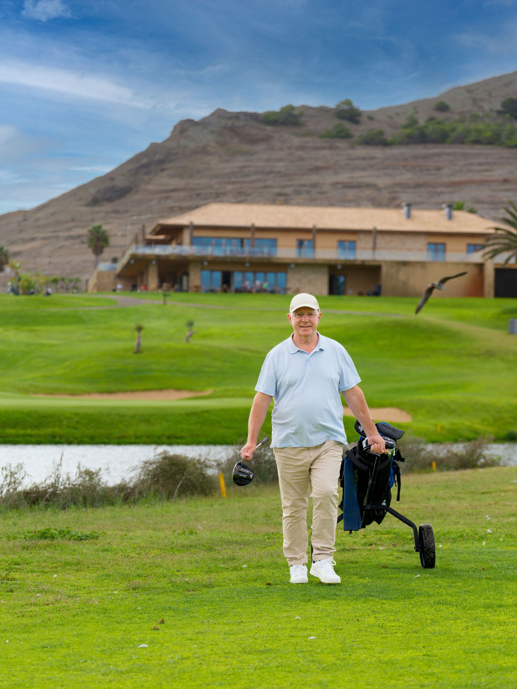
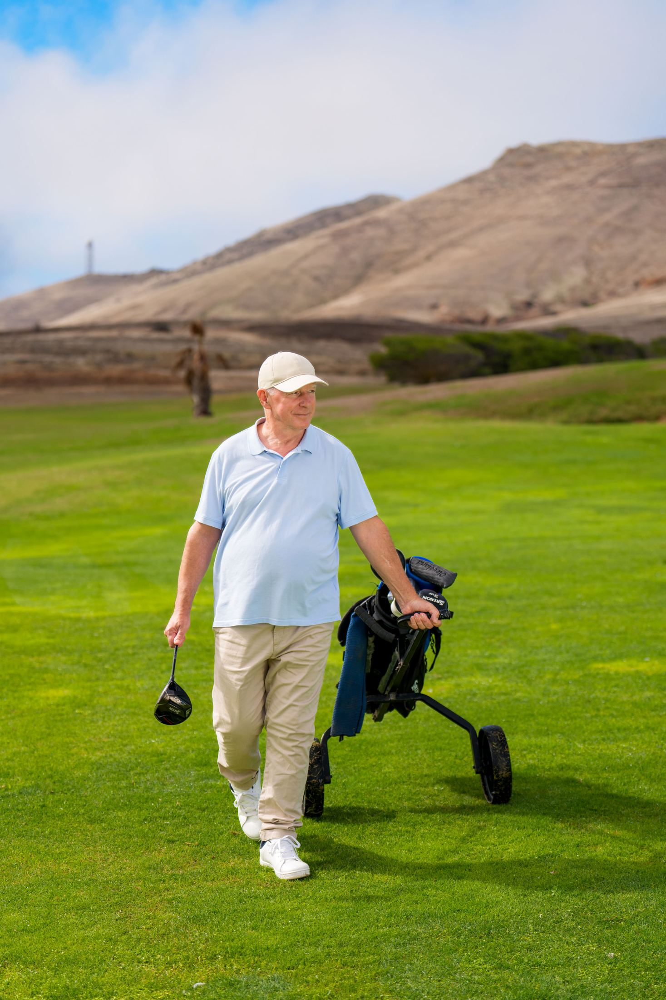
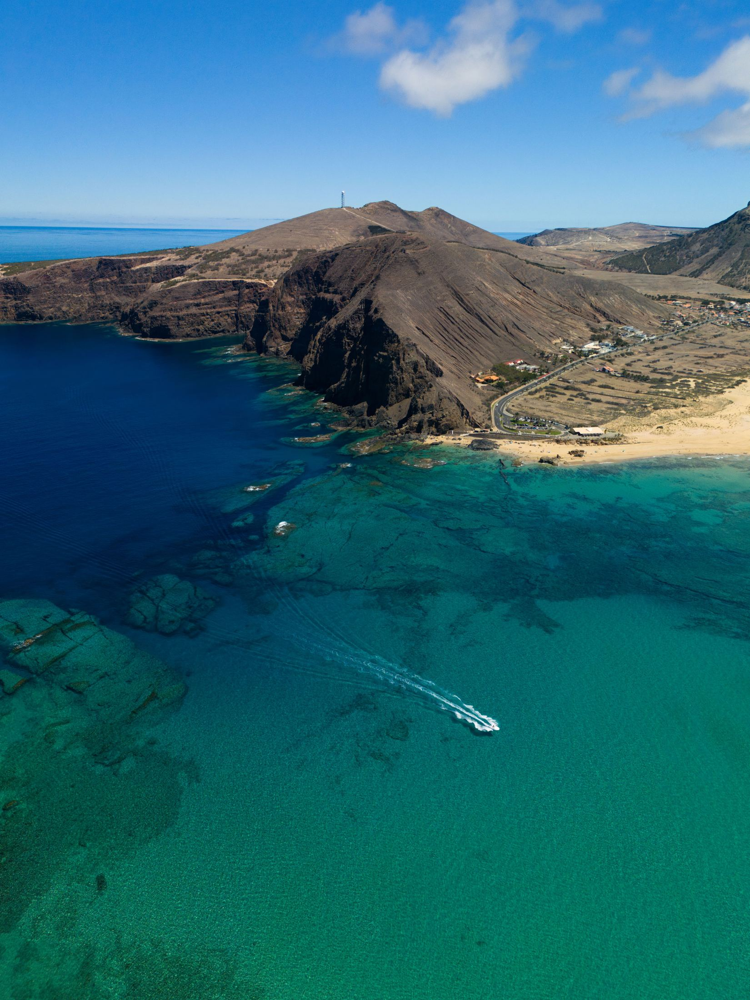

Viagem + Hotel
Precisa de desligar e relaxar junto ao mar?
Una o conforto da travessia no Lobo Marinho ao descanso de um hotel situado diretamente sobre o areal dourado.
Como podemos ajudar?
Atravesse o Atlântico para disputar uma ronda num dos campos mais cénicos da Europa, entre dunas douradas e falésias basálticas.
Desde77,50 €
Reservar
Porque vai gostar
Campo de 18 buracos (Par 72) desenhado por Severiano Ballesteros.
Transporte do saco de golfe incluído no navio.
Transfer porto ↔ campo de golfe incluído.
Vistas panorâmicas sobre a costa norte e sul.

Tudo o que precisa para aproveitar o Porto Santo, numa única reserva.
A bordo do Lobo Marinho
2h15 de travessia com todo o conforto, entre o Funchal e o Porto Santo.
Decks exteriores para contemplação do oceano e observação de cetáceos.
Restaurante self-service, bares e cafetarias com pastelaria fresca.
Cinema a bordo e sala de jogos / espaço infantil.
Acesso Wi-Fi gratuito durante a viagem.

Termos, condições e segurança marítima
Alteração ou cancelamento da viagem em caso de avisos meteorológicos da capitania.
Passageiros a pé: comparecer 45 min antes da partida.
Passageiros com veículos: comparecer 60 min antes da partida.
Perguntas frequentes
Sim, é recomendada a apresentação de licença da federação ou comprovativo de handicap válido.
Sim, as saídas são coordenadas com a chegada do Lobo Marinho para permitir aquecimento prévio no driving range.
Em caso de avisos meteorológicos da capitania, aplicam-se as políticas de alteração ou cancelamento da viagem.
Passageiros a pé devem comparecer no terminal 45 minutos antes da partida; passageiros com veículos, 60 minutos antes.
Viagem + Hotel
Una o conforto da travessia no Lobo Marinho ao descanso de um hotel situado diretamente sobre o areal dourado.
Viagem + Jipe
Da costa sul às encostas vulcânicas do norte, navegue no Lobo Marinho e explore os recantos mais autênticos num tour todo-o-terreno guiado.
Viagem + Bicicleta
Transporte a sua bicicleta a bordo do navio e explore as ciclovias planas e os caminhos panorâmicos ao seu próprio ritmo.